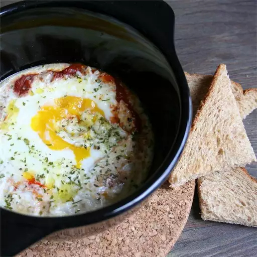

If you enjoy huevos rancheros, you will love this. The way the spicy sauce mingles with just barely set eggs is very similar, and when you start scooping this up with toasted chunks of bread, it gets borderline magical.
Preheat oven to 400 degrees F (200 degrees C).
Spoon marinara sauce into the bottom of a small baking dish, about 1/4 inch high. Sprinkle with red pepper flakes, salt, black pepper, and parsley. Make a narrow well in the center of the sauce for the eggs.
Crack each egg into a ramekin, then pour into the baking dish over the marinara sauce.
Sprinkle with Parmigiano-Reggiano cheese, olive oil, and cream. Season with salt and black pepper to taste.
Bake in the preheated oven until yolks are just set, 10 to 12 minutes. Serve with toast.